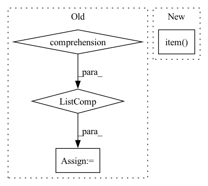

Pattern ID :21405
Before Change
def sweep_n(ntensor, niter, dtype):
print("n, dtype, ntensor, gflop, runtime, tflop/s")
for n in [16, 32, 64, 128, 256, 512, 1024, 2048, 4096]:
nt_a = torch.nested_tensor(
[torch.randn(n, n).to(dtype).cuda() for t in range(ntensor)]
)
nt_b = torch.nested_tensor(
[torch.randn(n, n).to(dtype).cuda() for t in range(ntensor)]
)After Change
nt_a_size = torch.ops.aten._nested_tensor_size(nt_a)
lengths = nt_a_size[:, 1]
print(",".join(map(str, [ntensor, dtype, lengths.min().item(),
lengths.float().mean().item(), lengths.max().item() , runtime])))
if __name__ == "__main__":In pattern: SUPERPATTERN
Frequency: 3
Non-data size: 4
Instances Fragment ID: 68210745
Project Name: pytorch/pytorch
Commit Name: 943b20e7ae290d8e71f877eb700f197a9df56cbe
Time: 2022-11-02
Author: cpuhrsch@fb.com
File Name: benchmarks/nested/nested_bmm_bench.py
M Class Name: AnonimousClass
N Class Name: AnonimousClass
M Method Name: sweep_n(2)
N Method Name: sweep_n(3)
M Parent Class:
N Parent Class:
M File Name: benchmarks/nested/nested_bmm_bench.py
N File Name: benchmarks/nested/nested_bmm_bench.py
M Start Line: 22
M End Line: 33
N Start Line: 24
N End Line: 40
Before Change
zero_grad_params(self.output_params)
reservoir.forward = self.eprop._decorate_hidden_forward(reservoir.forward, reservoir.name)
output_layer.forward = self.eprop._decorate_forward(output_layer.forward, output_layer.name)
for _ in progress_bar:
x_pred = []
x_pred.append(self.true_time_series[:, 0, :].clone())
forward_tensor = self.true_time_series[:, 0, :].clone().to(reservoir.device)
hh = None
for t in range(1, self.true_time_series.shape[-2]):
forward_tensor, hh = unpack_out_hh(reservoir(forward_tensor, hh, t=t-1))
forward_tensor, _ = unpack_out_hh(output_layer(forward_tensor, None, t=t-1))
x_pred.append(forward_tensor)
// eligibility_traces = dy_dw_local(y=forward_tensor, params=self.params)
// self.eprop.eligibility_traces = eligibility_traces
// batch_loss = self.eprop.apply_criterion(forward_tensor, self.true_time_series[:, t].to(forward_tensor.device))
// learning_signals = self.compute_learning_signals(loss_at_t)
// errors = self.eprop.compute_errors(forward_tensor, self.true_time_series[:, t])
// learning_signals = self.eprop.compute_learning_signals(errors)
// self.eprop.update_grads(errors, batch_loss)
forward_tensor.detach_()
hh = recursive_detach(hh)
// if t % self.update_each == 0:
// self.eprop._make_optim_step()
self.eprop._make_optim_step()
x_pred = torch.stack([t.cpu() for t in x_pred] , dim=1)
pvar = PVarianceLoss()(x_pred, self.true_time_series.to(x_pred.device))
mse = torch.nn.MSELoss()(x_pred, self.true_time_series.to(x_pred.device))
progress_bar.set_postfix({"pvar": to_numpy(pvar).item(), "MSE": to_numpy(mse).item()})After Change
for _ in range(100):
val_x_pred = self.model.get_prediction_trace(inputs)
pvar = PVarianceLoss()(val_x_pred, self.raw_time_series.to(val_x_pred.device))
val_pvars.append(to_numpy(pvar).item() )
print(f"Validation PVariance: {np.mean(val_pvars):.3f}")
return x_pred, self.raw_time_series
Fragment ID: 68210746
Project Name: neurotorch/neurotorch
Commit Name: da8d4065502c761ccf6e28e47dd189e3b5488140
Time: 2023-01-31
Author: 50332514+JeremieGince@users.noreply.github.com
File Name: src/neurotorch/learning_algorithms/debug_e_prop_v5.py
M Class Name: SimplifiedEpropFinal
N Class Name: SimplifiedEpropFinal
M Method Name: train(4)
N Method Name: train(4)
M Parent Class:
N Parent Class:
M File Name: src/neurotorch/learning_algorithms/debug_e_prop_v5.py
N File Name: src/neurotorch/learning_algorithms/debug_e_prop_v5.py
M Start Line: 120
M End Line: 153
N Start Line: 115
N End Line: 144
Before Change
def sweep_n(ntensor, niter, dtype):
print("n, dtype, ntensor, gflop, runtime, tflop/s")
for n in [16, 32, 64, 128, 256, 512, 1024, 2048, 4096]:
nt_a = torch.nested_tensor(
[torch.randn(n, n).to(dtype).cuda() for t in range(ntensor)]
)
nt_b = torch.nested_tensor(
[torch.randn(n, n).to(dtype).cuda() for t in range(ntensor)]
)After Change
runtime = bench(nt_a, nt_b, niter)
nt_a_size = torch.ops.aten._nested_tensor_size(nt_a)
lengths = nt_a_size[:, 1]
print(",".join(map(str, [ntensor, dtype, lengths.min().item() ,
lengths.float().mean().item(), lengths.max().item(), runtime])))
Fragment ID: 68210747
Project Name: pytorch/pytorch
Commit Name: 943b20e7ae290d8e71f877eb700f197a9df56cbe
Time: 2022-11-02
Author: cpuhrsch@fb.com
File Name: benchmarks/nested/nested_bmm_bench.py
M Class Name: AnonimousClass
N Class Name: AnonimousClass
M Method Name: sweep_n(2)
N Method Name: sweep_n(3)
M Parent Class:
N Parent Class:
M File Name: benchmarks/nested/nested_bmm_bench.py
N File Name: benchmarks/nested/nested_bmm_bench.py
M Start Line: 22
M End Line: 33
N Start Line: 24
N End Line: 40
Before Change
c_terms = preds_[:, (torch.ones(*N_mask.shape)-N_mask-CA_mask).bool() ]
// compute phis and count lower than 0s
phis_count = []
for i in range(preds.shape[0]):
// calculate phi angles
phis = [ get_dihedral_torch(c_terms[i,j-1], n_terms[i,j], c_alphas[i,j], c_terms[i,j]) \
for j in range(1, c_alphas.shape[-1]) ] // phi not allowed for first AA -> [1:]
phis_count.append( (np.array(phis)<0).sum() )
After Change
else:
c_terms = preds_[:, (torch.ones(*N_mask.shape)-N_mask-CA_mask).squeeze().bool() ]
// compute phis and count lower than 0s
phis_count = [ (get_dihedral_torch(c_terms[i,:-1], n_terms[i,:], c_alphas[i,:], c_terms[i,:])<0).sum().item() \
for i in range(preds.shape[0])]
idx = np.argmax(phis_count) Fragment ID: 68210749
Project Name: lucidrains/alphafold2
Commit Name: 45a1bffd138fc5bddf28c382a492c539f0a4bc0b
Time: 2021-02-07
Author: ericalcaide1@gmail.com
File Name: alphafold2_pytorch/utils.py
M Class Name: AnonimousClass
N Class Name: AnonimousClass
M Method Name: fix_mirrors_torch(6)
N Method Name: fix_mirrors_torch(6)
M Parent Class:
N Parent Class:
M File Name: alphafold2_pytorch/utils.py
N File Name: alphafold2_pytorch/utils.py
M Start Line: 431
M End Line: 447
N Start Line: 444
N End Line: 453